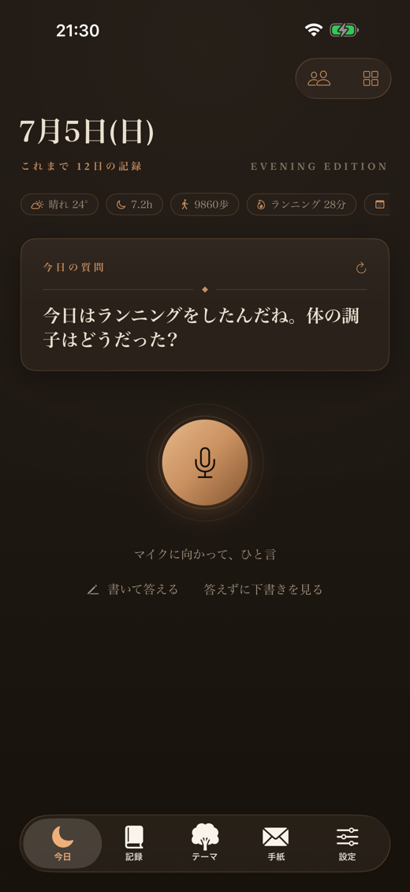
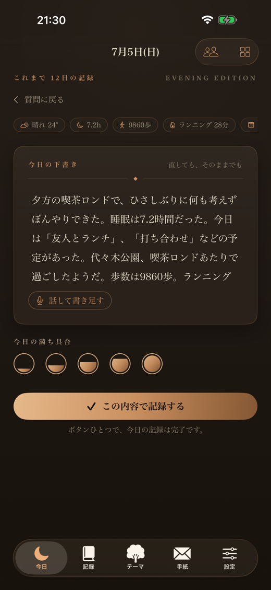
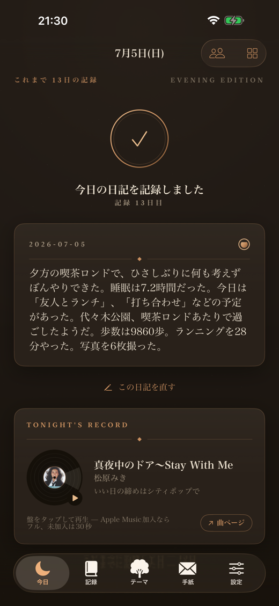
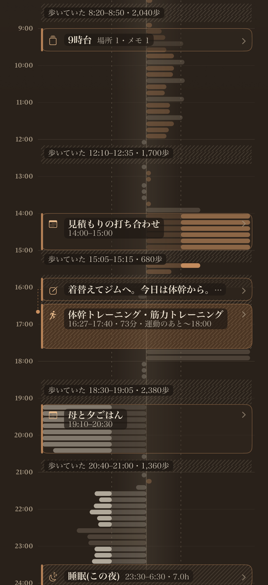
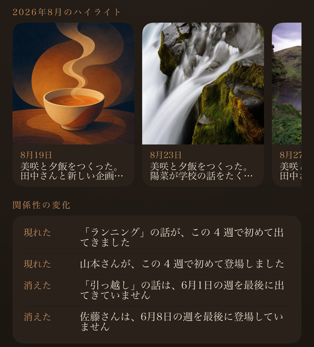
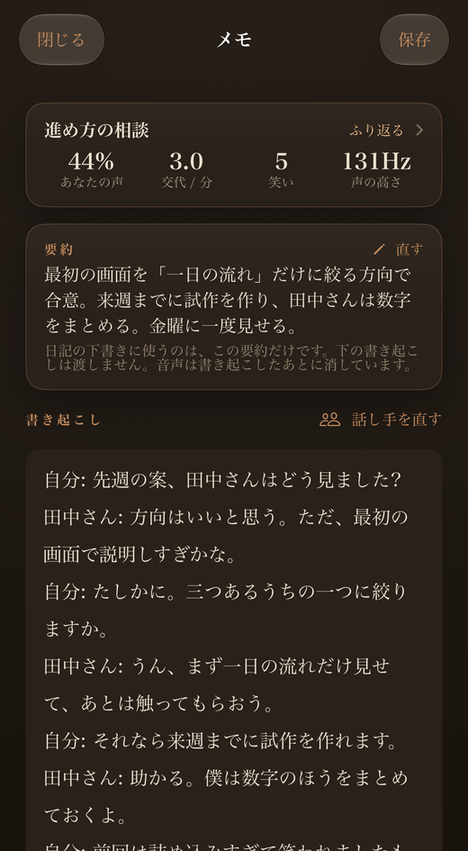
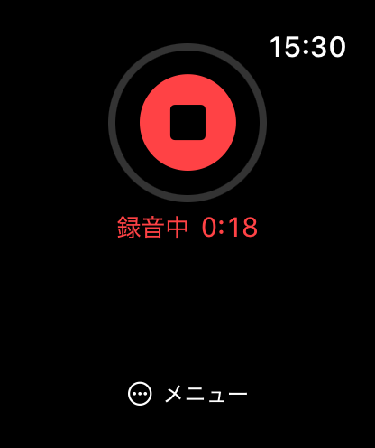
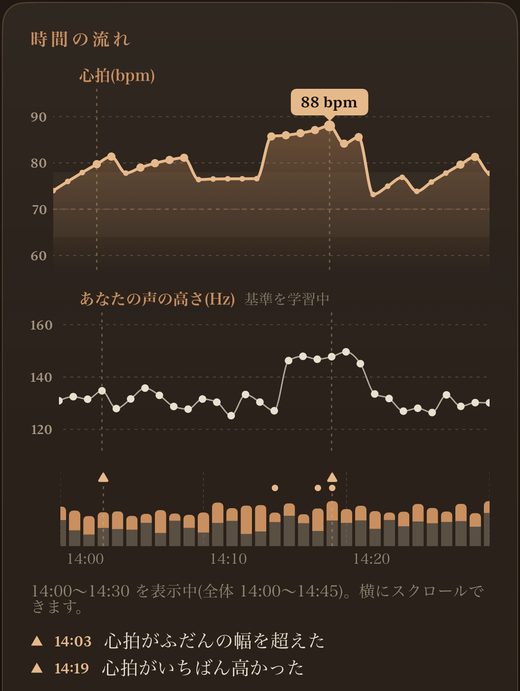
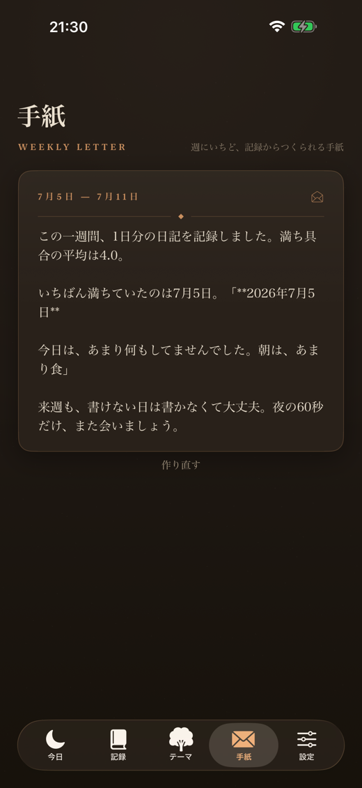

あなたの一日には、
いつも誰かがいる。
誰と話し、どこで過ごし、何に心が動いたか。
何もしなければ流れていく毎日が、ここでは関係の記憶として積み重なっていきます。
ある日ふと「そういえば」と思い出せるように。いつか、大切な人と思い出を話せるように。
書かなくても、
今日は残っている。
ひと言だけ
その日の記録から、問いがひとつ。
話しても、選ぶだけでもいい。

一日が、文章に
場所・写真・睡眠・歩数・予定から、
その日の下書きができている。

読んで、残す
直したいところだけ直して、ひと押し。
今日の日記が、静かに残る。

一日一日に、
輪郭を。
一日の流れが、
ひと目で見える。
予定、滞在した場所、メモ、運動、睡眠が、時間の流れに沿って並びます。Apple Watchがあれば、体が張っていた時間とゆるんでいた時間も、時間帯ごとの「普段のあなた」と比べて見えます。

移り変わりを、
言葉で知らせてくれる。
新しく現れた人、しばらく会っていない人、出てこなくなった話題。月ごとの変化を、短い言葉で教えてくれます。その時期のハイライトの絵を押せば、その日の日記に戻れます。

大切な人との時間を、
言葉のまま残す。
話してメモで会話を残すと、iPhoneの中で文字になり、話し手ごとに分かれます。録音は文字にしたあと消えます。名前を付けた人との会話は、記憶の中でその人に結びついていきます。


話が弾んだ時間が、
あとから分かる。
会話の時間の流れに、心拍・あなたの声の高さ・話した量・笑いが重なります。声が高くなり、笑いが集まり、心拍が上がったところ。どこで話が弾んだのかが、ひと目で見えます。

朝の一筆と、
一週間の手紙。
翌朝、前の日を受けとめる一筆が届きます。週の終わりには、7日分の記録からあなた宛ての手紙が。その日の一枚の絵と、今夜の一枚の曲が、一日一日を思い出せる形にします。

あなたの記録は、
あなたのもの。
アカウントがありません
メールアドレスもパスワードもいりません。開いたその日から始められます。
このiPhoneに残ります
日記も会話も、あなたのiPhoneに保存されます。開発者のサーバーに、日記や会話は残りません。
いつでも全部、持ち出せる
すべての記録を、Markdownや完全な写しとして書き出せます。iCloud Driveに毎日写しを置くこともできます。
文章を作る場所は、あなたが選ぶ
- iPhoneの中だけ端末内のApple Intelligenceで作ります。
- AppleのプライベートクラウドAppleによれば、送った文章は処理のためだけに使われ、保存されず、Appleも読めません。
- OpenAIも使う定期購読中とお試しの間だけ、同意のうえで。送った文章が学習に使われることはありません。
何をどこで扱うかは、プライバシーポリシーに具体的に書いています。
はじめるのに、
お金はいりません。
毎日の日記・自動の記録・下書きと整え・書き出しは、ずっと無料。朝の一筆も週に一度届きます。
さらに最初の3回の朝（最長7日）は、カード登録なしで、定期購読の機能をそのままお試しいただけます。自動で課金されることはありません。
- 毎朝の一筆・週の手紙
- 会話の記録(Apple Watchからも)
- その日の一枚・今夜の一枚
- 年額と同じ機能
- 気軽にはじめる
ファミリー共有に対応しています。今夜の一枚のフル再生には、別途Apple Musicの契約が必要です。定期購読はいつでも解約できます。
よくある質問
本当に書かなくてもいいんですか?
はい。場所・写真・睡眠・歩数・予定などから、その日の下書きができています。読んで、直したければ直して、残すだけ。話して答えたい日は、マイクにひと言でも。
ほかのAI日記アプリと、何が違いますか?
多くのAI日記アプリは、書いた文章をAIが分析したり、AIと会話して日記にしたりします。Liner Notesは、書く前から残っています。場所・写真・予定・睡眠・歩数・心拍から、その日の下書きがひとりでにできていて、夜は読んで整えるだけ。会話はiPhoneの中で文字になり、話し手ごとに分かれ、録音は文字にしたあと消えます。アカウントはなく、日記や会話は開発者のサーバーに保存されません。文章を作る場所(iPhoneの中・Appleのプライベートクラウド・OpenAI)も自分で選べます。8つのAI日記アプリの比較はこちら →
記録はどこに残りますか?
あなたのiPhoneに残ります。アカウントはなく、開発者のサーバーに日記や会話は保存されません。文章を作る場所(iPhoneの中・Appleのプライベートクラウド・OpenAI)は、設定で選べます。
会話を残すとき、周りの人の声はどうなりますか?
録音はiPhoneの中で文字になり、文字にしたあと消えます。名前を付けた人の声の特徴だけを、話し手を見分けるために残します。名前を付けていない人の声の特徴は、最長90日で消えます。その場の人に伝えるかどうかは、あなたの判断です。
Apple Watchは必要ですか?
なくても使えます。Apple Watchがあると、手首から会話を残せるほか、一日の時間軸に体の張り・ゆるみが出ます。
途中でやめてしまいそうです。
大丈夫です。休んでいる間も自動の記録は続いていて、戻ってきた日に「その間の記録」が待っています。ストリークがないので、失うものはありません。
無料と定期購読は何が違いますか?
無料のままでも、毎日の日記・自動の記録・下書きと整え・書き出しがずっと使え、朝の一筆も週に一度届きます。定期購読(月額¥600、または年額¥5,000・7日間無料)では、毎朝の一筆・週の手紙・会話の記録・その日の一枚・今夜の一枚が使えます。最初の3回の朝(最長7日)は、カード登録なしでお試しいただけます。